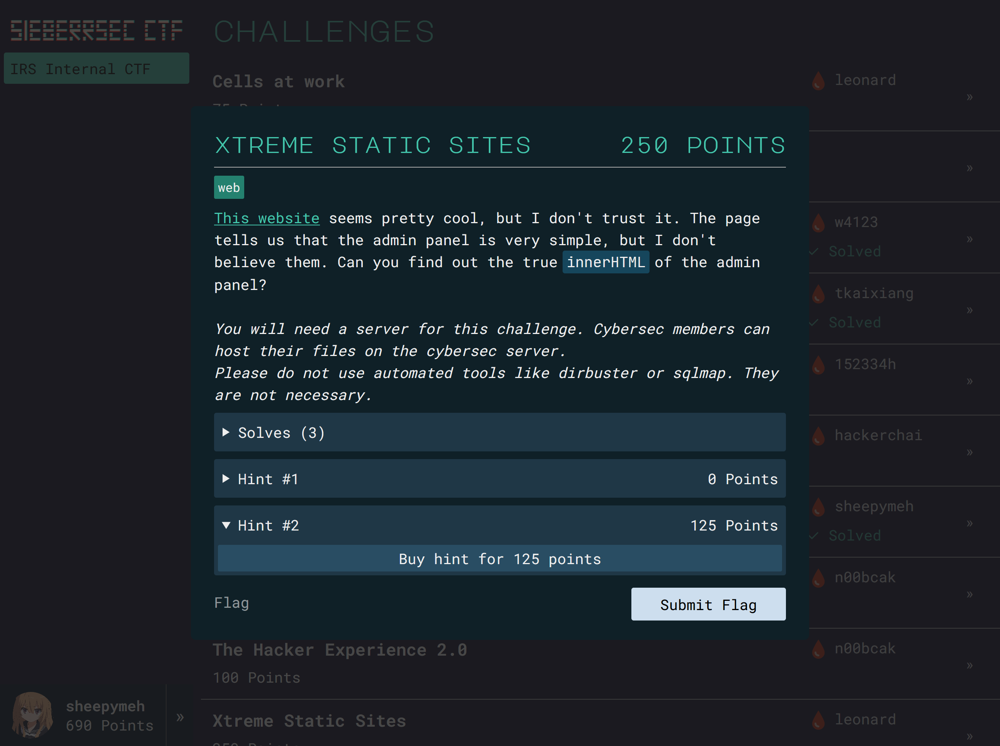
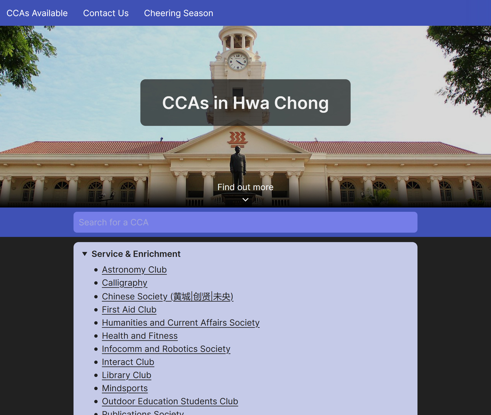
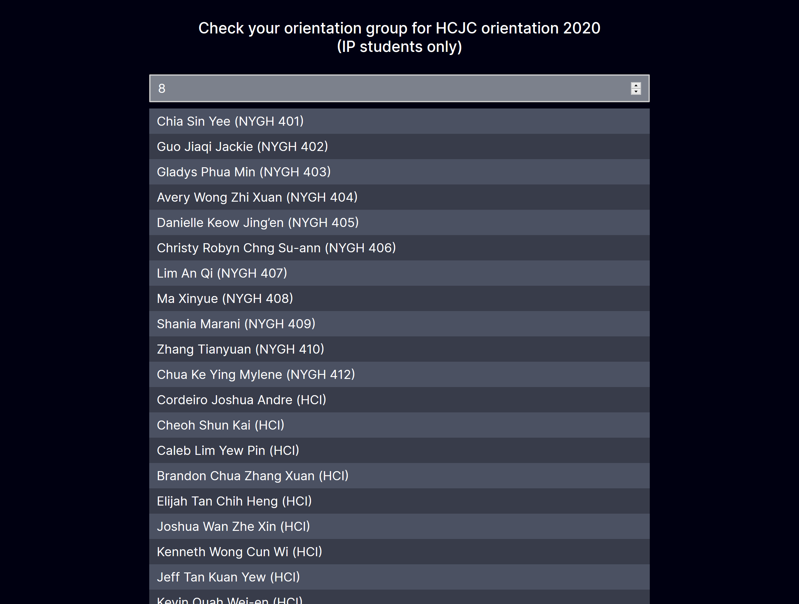
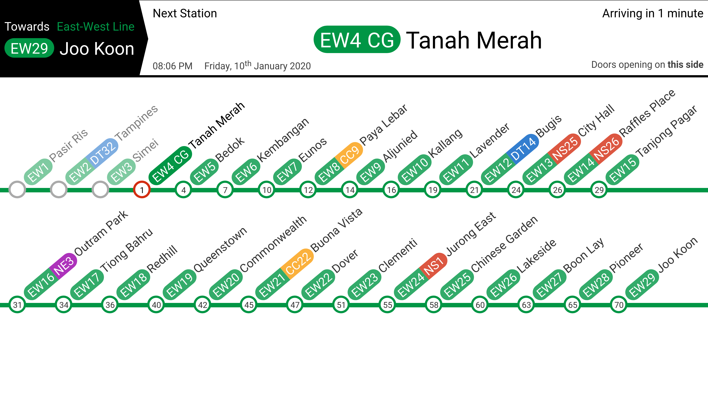
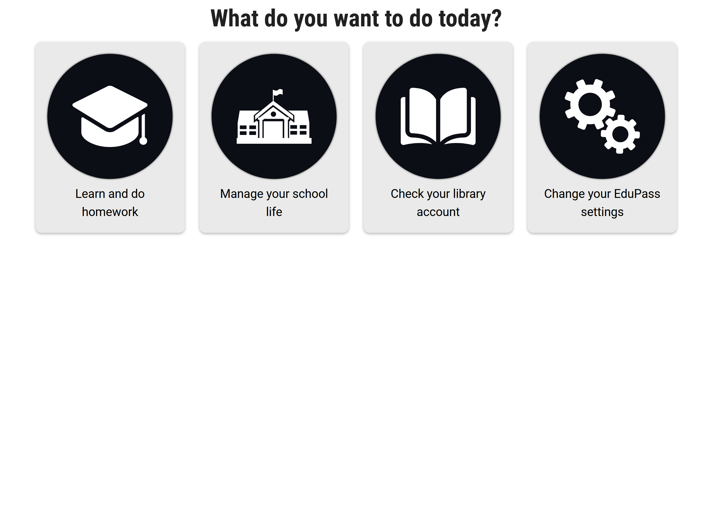

 Sieberrsec CTF A new CTF platform for the HCIRS Cybersecurity section. link ctfy.irscybersec.tk GitHub Repository
 Alternative CCAs Website An unofficial website to showcase Hwa Chong's CCAs using serverless hosting and SaaS. link ccas.ml GitHub Repository
 HCJC Orientation Grouping Checker Quick static site built in ~5 hours. link sheepymeh.github.io GitHub Repository
 Train Info System In-train passenger information system using NodeJS and socket.io. GitHub Repository
 EduPass Build On, Singapore 3rd place winner. An integrated platform for students to manage their school life. GitHub Repository